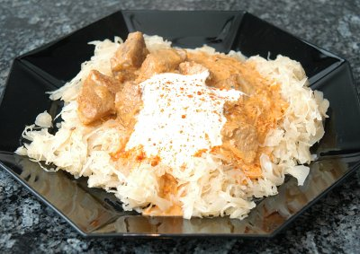

| Zutaten für 4 Personen: | |
| 600 g | Schweinefleisch, mager |
| 2 EL | Butter |
| 3 | Zwiebeln |
| 2 EL | Paprika, edelsüss |
| 1 dl | Weisswein |
| 500 g | Sauerkraut |
| 1 | Knoblauchzehe |
| 1/2 TL | Kümmel |
| 1 Prise | Dill |
| Salz, Pfeffer | |
| 1 Prise | Paprikapulver, scharf |
| 250g | Sauerrahm |
Zubereitungszeit: 15 Minuten
Garzeit: 20 Minuten
Pro Person: 735 Kalorien, 3070 Joule
Zwiebeln hacken.
Schweinefleisch, in Würfel geschnitten, in der Butter im Dampfkochtopf hellbraun anbraten.
Gehackte Zwiebeln zugeben, 1 - 2 Minuten anziehen lassen. Das Paprikapulver zugeben, gut umrühren, und dann mit dem Weisswein ablöschen.
Das gut abgetropfte Sauerkraut, die durchgepresste Knoblauchzehe, den Kümmel, den Dill, Salz, Pfeffer und das scharfe Paprikapulver zugeben. Topf schliessen, 20 Minuten garen.
Topf vom Herd nehmen, Ventil absinken lassen und öffnen. Sauerrahm in einem kleinen Topf unter gutem Rühren erwärmen (nicht kochen!). Die Hälfte davon unter das Gulasch ziehen, nachwürzen und anrichten. Die restliche Sahne unmittelbar vor dem Servieren auf das Gericht giessen und mit wenig Paprikapulver bestreuen.
Herbert Eigenmann, Code: SWG
Schmeckt ausgezeichnet! Ich mag den Kümmel nicht so; den könnte man von mir aus weglassen. Das Sauerkraut habe ich separat zubereitet. RE 17.10.2009